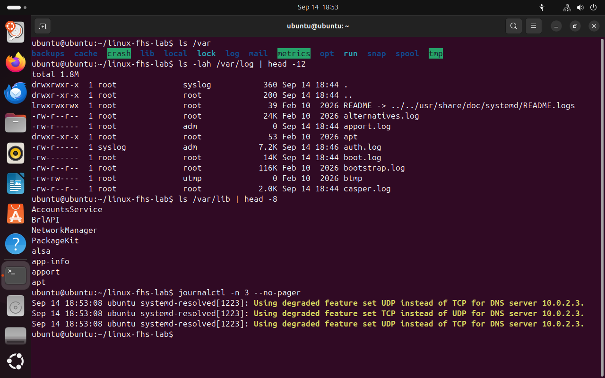
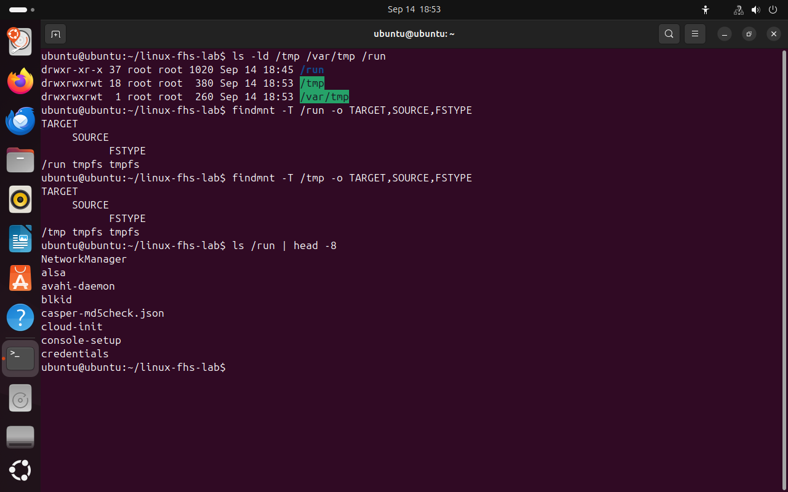
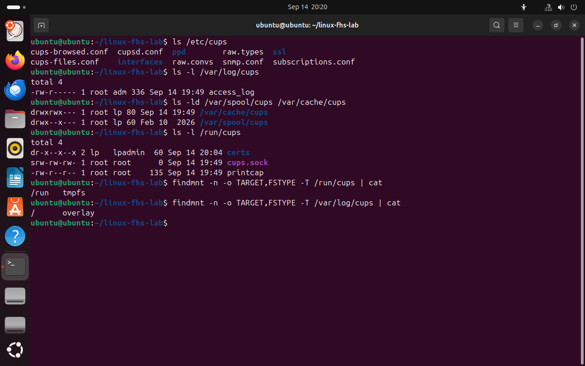

Часть 4 из 8
Изменяемые и временные данные
В этой части рассмотрим каталог /var, где программы хранят данные, изменяющиеся во время работы, и каталоги временных файлов /tmp, /var/tmp и /run.
4.1 Каталог /var
Программы не только читают свои файлы, но и создают новые данные: записывают журналы, ставят задания в очередь, ведут базы. Такие данные нельзя хранить рядом с программой в /usr, поэтому для них предназначен отдельный каталог /var (от английского variable — изменяемый).
Разницу между /usr и /var можно представить так. Программа — это учебник: его текст не меняется, сколько бы его ни читали. Журнал — это тетрадь, в которую каждый день дописывают новые записи. Учебники и тетради хранят отдельно: учебник можно заменить новым изданием, а тетрадь с записями терять нельзя.
Внутри /var данные разделены по тому, насколько они важны и можно ли их восстановить. Постоянные данные программ, например базы, хранятся в /var/lib: их потеря приводит к утрате информации. Журналы находятся в /var/log. Кэш, то есть данные, которые программа может вычислить заново, хранится в /var/cache. Очереди заданий, ожидающих обработки, — в /var/spool.
| Каталог | Данные | Последствия удаления |
|---|---|---|
/var/lib | постоянные данные программ, базы | данные теряются |
/var/log | журналы событий | теряется история, программа работает |
/var/cache | кэш | программа создаёт его заново |
/var/spool | очереди заданий | теряются необработанные задания |
Примеры. Сервер баз данных MySQL хранит базы в /var/lib/mysql. Веб-сервер Apache пишет журнал посещений сайта в /var/log/apache2. Менеджер пакетов apt держит скачанные пакеты в кэше /var/cache/apt: если кэш очистить, пакеты просто скачаются заново. Задания печати ждут своей очереди в /var/spool/cups.
ls /var# подкаталоги /varls -lah /var/log | head -12# первые файлы журналовls /var/lib | head -8# постоянные данные программjournalctl -n 3 --no-pager# три последние записи системного журнала
- 1кэш
- 2постоянные данные
- 3журналы
- 4очереди
{kind=link}

Весь снимок ↗Подкаталоги /var.
4.2 Временные файлы
Для временных данных в системе предусмотрено три каталога с разным сроком хранения. В /tmp программы создают промежуточные файлы; система может удалять их в любой момент, как правило при перезагрузке. /var/tmp также предназначен для временных файлов, но они сохраняются после перезагрузки. В /run хранятся сведения о работающих службах: номера процессов и файлы для обмена данными между программами. Этот каталог очищается при каждой загрузке системы.
Пример. Архиватор распаковывает файлы во временный каталог внутри /tmp и после работы удаляет их. Работающая служба записывает в /run номер своего процесса, чтобы систему можно было попросить её остановить. После перезагрузки номер процесса будет другим, поэтому старое значение хранить незачем.
ls -ld /tmp /var/tmp /run# сведения о самих каталогахfindmnt -T /run -o TARGET,SOURCE,FSTYPEfindmnt -T /tmp -o TARGET,SOURCE,FSTYPEls /run | head -8# содержимое /run
- 1/run — tmpfs
- 2/tmp — tmpfs в этой сессии
{kind=link}

Весь снимок ↗В Live-сессии и /run, и /tmp находятся в оперативной памяти.
4.3 Изменяемые данные службы печати
На примере CUPS видно, как данные одной службы распределяются по сроку хранения. Настройки находятся в /etc/cups, журналы — в /var/log/cups, очередь печати — в /var/spool/cups, кэш — в /var/cache/cups. Файл cups.sock, через который программы обращаются к работающей службе, находится в /run/cups и после перезагрузки создаётся заново.
ls /etc/cups# настройкиls -l /var/log/cups# журналыls -ld /var/spool/cups /var/cache/cups# очередь печати и кэшls -l /run/cups# файлы работающей службыfindmnt -n -o TARGET,FSTYPE -T /run/cups | catfindmnt -n -o TARGET,FSTYPE -T /var/log/cups | cat
- 1основной файл настроек
- 2журнал обращений к службе
- 3файл для связи со службой
- 4/run/cups — в оперативной памяти
- 5журналы — на основной файловой системе
{kind=link}

Весь снимок ↗Файлы службы печати с разным сроком хранения.
Итоги части 4
- Данные, изменяющиеся во время работы программ, хранятся в
/var. /var/lib— постоянные данные,/var/log— журналы,/var/cache— кэш,/var/spool— очереди./tmpи/runочищаются при перезагрузке,/var/tmp— нет.- tmpfs хранит файлы в оперативной памяти.
В отчётСнимок с ls /var и findmnt для /run.